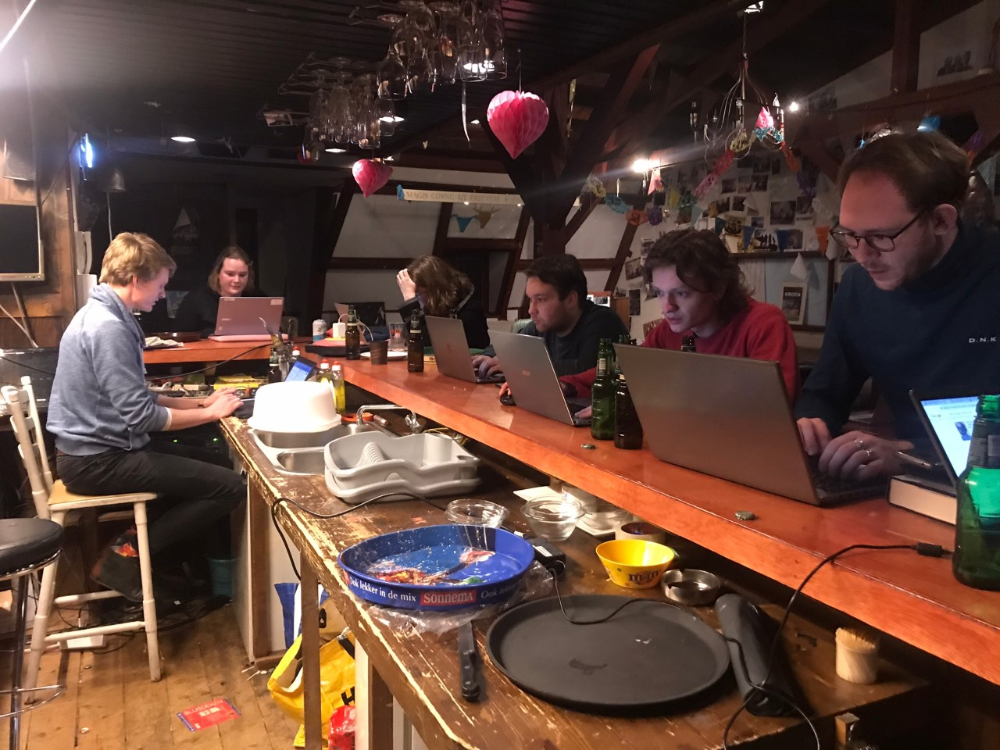

Op deze pagina kunt u verdere informatie over de lustrumdies vinden. Deze pagina zal in de loop van de tijd worden aangevuld met nieuwe informatie. Mocht u toch niet alle informatie hebben gevonden, schroom dan niet om het contactformulier in te vullen.
De 'traditionele' dies is het complete pakket, the full experience. Een dies met alles erop en eraan. Een vergadering met onder andere agendapunten als 'de MONITOR' en de Diesrede. Er zal een mogelijkheid zijn om de Senaat te feliciteren, elkaar te ontmoeten en bij te praten. Dit onder het genot van een kopje koffie, een glaasje Port, of tijdens het driegangendiner.
Als u zich opgeeft voor de 'traditionele' dies, kunt u het volgende programma ongeveer verwachten: c.a. 13:00 Welkom met koffie 13:30-14:30 Heropening vergadering, met onder andere de MONITOR en Diesrede 14:30-17:30 Receptie en ruimte voor ontmoeting 17:30 Start van het diner. Het diner zal waarschijnlijk tot in ieder geval 20:30 duren. 20:30 Start van het avondfeest
Mocht u niet zoveel behoefte of tijd hebben voor een 'traditionele' dies, dan kunt u zich opgeven voor het avondfeest. Dan bent u rond 20:30 welkom om uw amicae et amici te ontmoeten. Er zal een bar aanwezig zijn waar u drankjes kunt bestellen waarvan u samen met een hapje kunt genieten. Tijdens het avondfeest wordt de dies gezamenlijk afgesloten.
Een Dies bijwonen is helaas niet kosteloos. Omdat de kosten van een dies anno 2023 waarschijnlijk niet overeenkomt met het beeld dat u van de kosten hebt, lijkt het ons goed om een schatting te geven van de kosten.
Op dit moment is het niet mogelijk om concrete bedragen te noemen. Wij gaan er echter van de volgende bedragen uit:
We zijn voor de Lustrum Dies druk bezig met het zoeken van een geschikte locatie. We zijn in gesprek met een aantal mesen, en we kunnen met 90% zekerheid zeggen dat de Dies in Kampen gehouden zal worden. Mocht het toch niet het geval zijn, zullen we ervoor zorgen dat u terug kunt komen in Kampen, bijvoorbeeld met een bus. We zullen zo snel mogelijk meer details geven. Als iedereen zich heeft aangemeld kunnen we de knoop van de locatie doorhakken.
De eerste update van de DiesCie 2023! We zijn vol goede moed uit de startblokken gegaan.
De eeste stap die we ondernemen is het verzamelen van gegevens. Daarvoor is onder andere deze website gemaakt. Voel u vrij om even rond te neuzen!
De Album Corporis is door een amice in een Excel bestand overgezet. Dit document vullen we stelselmatig in met de gegevens van oud-leden en reünisten.
Verder hopen we in de nabije toekomst een pagina met foto's op deze website te zetten. Daar kunt u zich alvast laten verheugen op de lustrumdies.
Het is nu al weer halverwege januari 2023. Tijd voor een update van de stappen die we gezet hebben. Allereerst is er nu een werkende pagina met foto's. De foto's zullen worden aangevuld etc.
Daarnaast hebben een aantal amicae et amici de DiesCie geholpen om gegevens op het internet op te zoeken. Het was een gezellige bedoeling. Hieronder een foto van de LAN party.
De volgende stap is om de mail de deur uit te doen naar alle mailadressen die we gevonden hebben. Als u dit leest, is dat natuurlijk al gebeurd!
Het wordt eens tijd voor een update. De studie heeft ons weer helemaal in de greep gehad. Tja, niet voor niets brallen we '...stage lopen, bijbelstudie zit wel goed...' Toch nemen we als DiesCie onze verantwoordelijkheid weer op ons om de Lustrumdies te organiseren. Daarom bestegen we de trap naar soos, opende een beugel om weer eens te vergaderen. Een mooi feest organiseren gaat natuurlijk niet vanzelf.
Wat is er eigenlijk gebeurd in de afgelopen tijd? We hebben de mail uitgestuurd en al een hoop reactie gekregen. Dank daarvoor! Het kan echter nog beter. We willen nog meer van onze amici bereiken. Daarom sturen we opnieuw een mail. En we vragen u, stuur aub. het bericht door! Het zou leuk zijn als uw jaargenoten en dispuutsgenoten ook aanwezig zijn.
Naast de mail die we naar u doorsturen, zijn we druk bezig met het scouten van locaties en catering voor de Dies. We hebben contact met de krant (het ND natuurlijk) om een mooi artikel over FQI te plaatsen. En daarnaast zijn we vooral veel aan het vergaderen en te fantaseren over de Lustrumdies.
De herinneringsmail heeft zijn vruchten afgeworpen. Nog meer amici hebben gereageerd via het formulier. Hartelijk dank daarvoor!
We hebben nu al een aantal keer de vraag gekregen of het mogelijk zou zijn om te zien wie zich heeft aangemeld. Naast het feit dat het best ingewikkeld is om te implementeren, is het ook de vraag hoe AVG-vriendelijk het is. Daarom lijkt het ons goed om een tussenstand te geven. Er hebben al ruim 160 amici positief gereageerd. Het is al een aardig getal. Maar het kan beter. Daarom vragen we u opnieuw: Deel het bericht met uw jaargenoten. Het zou mooi zijn als we dit getal nog kunnen verdubbelen!
Als DiesCie hebben we ook al een aantal locaties bekeken. Het lijkt veelbelovend. En een cateringbedrijf vinden zal ook wel goed komen. We moeten echter zo snel mogelijk een locatie boeken. Dus moeten we zo snel mogelijk een inschatting kunnen maken. We hopen medio mei een inschatting te maken. Met een marge voor amici die zich later aanmelden.
Het is eindelijk zover! Na een gepuzzel met de site en het verzamelen van gegevens, kunnen we een opgaveformulier de deur uit doen. We hopen zo snel mogelijk de opgaven binnen te krijgen! Lees de pagina van het opgaveformulier a.u.b. goed door. Daar staat nu alle relevante informatie. Op deze pagina vindt u het in het kort.
Nog even, dan vieren we de CLXe Dies Natalis van F.Q.I.